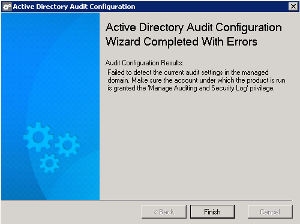

You are getting the following error during the configuration of audit settings in your
domain using the Active Directory Audit Configuration Wizard.

The account you use to run the Active Directory Audit Configuration wizard with Netwrix Auditor does not have the permissions to check current audit settings. The account must have the 'Managed Auditing and Security log' privilege.
By default the Active Directory Audit Configuration wizard is run under the credentials of the current Windows session (On behalf of a user who logged in to the machine and started the Netwrix Auditor console). To resolve this issue, you need to log into the system as another user who has the required permission, or perform the following:
The account you use to run the Active Directory Audit Configuration wizard with Netwrix Auditor does not have the permissions to check current audit settings. The account must have the 'Managed Auditing and Security log' privilege.
By default the Active Directory Audit Configuration wizard is run under the credentials of the current Windows session (On behalf of a user who logged in to the machine and started the Netwrix Auditor console). To resolve this issue, you need to log into the system as another user who has the required permission, or perform the following:
- Go to the product installation folder, by default C:Program Files (x86)NetwrixActive Directory Auditing
- Locate the Active Directory Audit Configuration shortcut.
- SHIFT + right-click on the Active Directory Audit Configuration shortcut, select "Run as different user" and specify domain admin credentials, or an account that is known to have the 'Managed Auditing and Security log' privilege.